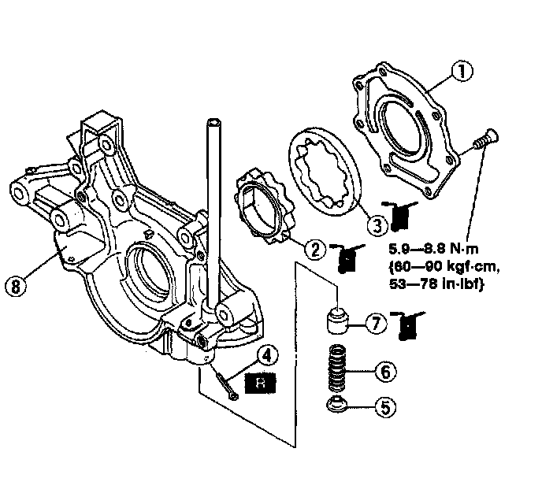
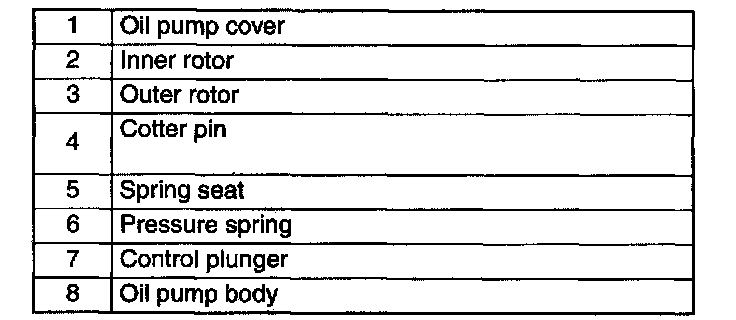
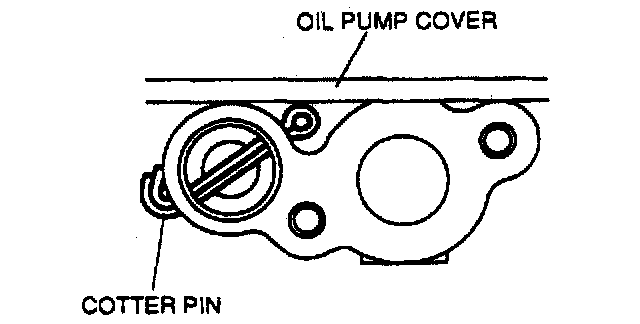

Oil Pump Disassembly/Assembly
OIL PUMP DISASSEMBLY/ASSEMBLY
Warning:
^ Continuous exposure with USED engine oil has caused skin cancer in laboratory mice. Protect your skin by washing with soap and water immediately after this work.


1. Disassemble in the order indicated in the table.
2. Assemble in the reverse order of disassembly.
Cotter Pin Assembly Note

1. Bend the cotter pin so that its tip does not project from the oil pump cover mounting surface.